A Comparison of Various Model Identification Methods
In this demo we compare several identification methods that are provided by System Identification Toolbox™. We begin by simulating experimental data and use several estimation techniques to estimate models from the data. The following estimation routines are illustrated in this demo: SPA, PEM, ARX, OE, ARMAX and BJ.
Contents
- System Description
- Defining a Model
- ARMAX Model
- Simulating the Model
- Performing Spectral Analysis
- Estimating Parametric State Space Models
- Estimating ARX Models
- Comparing the Performance of Two Models
- Using the Output Error (OE) Method to Estimate a Model
- Residual Analysis
- Estimating ARMAX and Box-Jenkins Models
- Comparing Estimated Models - Simulation and Prediction Behavior
- Comparing Frequency Functions
- Comparing Estimated Models with the True System
- Additional Information
System Description
A noise corrupted linear system can be described by:
y = G u + H e
where y is the output and u is the input, while e denotes the unmeasurable (white) noise source. G is the system's transfer function and H gives the description of the noise disturbance.
There are many ways to estimate G and H. Essentially they correspond to different ways of parameterizing these functions.
Defining a Model
System Identification Toolbox provides users with the option of simulating data as would have been obtained from a physical process. Let us simulate the data from an IDPOLY model with a given set of coefficients.
B = [0 1 0.5];
A = [1 -1.5 0.7];
m0 = idpoly(A,B,[1 -1 0.2],'Ts',0.25); % The sampling interval is 0.25 s.
The third argument [1 -1 0.2] gives a characterization of the disturbances that act on the system. Execution of these commands produce the following discrete-time idpoly model:
m0
Discrete-time IDPOLY model: A(q)y(t) = B(q)u(t) + C(q)e(t)
A(q) = 1 - 1.5 q^-1 + 0.7 q^-2
B(q) = q^-1 + 0.5 q^-2
C(q) = 1 - q^-1 + 0.2 q^-2
This model was not estimated from data.
Sampling interval: 0.25
ARMAX Model
Here q denotes the shift operator so that A(q)y(t) is really short for y(t) - 1.5 y(t-1) + 0.7 y(t-2). This particular model structure is known as an ARMAX model, where AR (Autoregressive) refers to the A-polynomial, MA (Moving average) to the noise C-polynomial and X to the "eXtra" input B(q)u(t).
In terms of the general transfer functions G and H, this model corresponds to a parameterization:
G(q) = B(q)/A(q) and H(q) = C(q/A(q), with common denominators
Simulating the Model
We generate an input signal u and simulate the response of the model to these inputs. The IDINPUT command can be used to create an input signal to the model and the IDDATA command will package the signal into a suitable format. The SIM command can then be used to simulate the output as shown below:
RSTREAM = RandStream.create('shr3cong','seed',12); PREVSTREAM = RandStream.setDefaultStream(RSTREAM); u = idinput(350,'rbs'); %Generates a random binary signal of length 350 u = iddata([],u,0.25); %Creates an IDDATA object. The sampling interval is 0.25 sec. y = sim(m0,u,'noise') %Simulates the model's response for this %input with added white Gaussian noise e %according to the model description m0 RandStream.setDefaultStream(PREVSTREAM)
Time domain data set with 350 samples.
Sampling interval: 0.25
Outputs Unit (if specified)
y1
One aspect to note is that the signals u and y are both iddata objects. Next we collect this input-output data to form a single iddata object.
z = [y,u];
To get information on this iddata object (which now incorporates both the input and output data samples), just enter its name at the MATLAB® command window:
z
Time domain data set with 350 samples.
Sampling interval: 0.25
Outputs Unit (if specified)
y1
Inputs Unit (if specified)
u1
To plot the first 100 values of the input u and output y, use the PLOT command on the iddata object:
plot(z(1:100));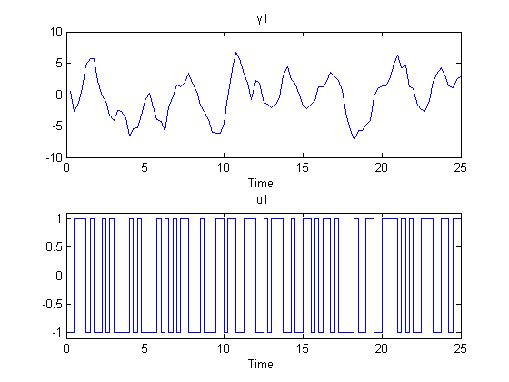
It is good practice to use only a portion of the data for estimation purposes, ze and save another part to validate the estimated models later on:
ze = z(1:200);
zv = z(201:350);
Performing Spectral Analysis
Now that we have obtained the simulated data, we can estimate models and make comparisons. Let's start with spectral analysis. We invoke the SPA command which returns a spectral analysis estimate of the frequency function and the noise spectrum.
GS = spa(ze);
The result of spectral analysis is a complex-valued function of frequency: the frequency response. It is packaged into a so called IDFRD object (identified frequency response data):
GS
IDFRD model GS. Contains Frequency Response Data for 1 output and 1 input and SpectrumData for disturbances at 1 output at 128 frequency points, ranging from 0.098175 rad/s to 12.566 rad/s. Output Channels: y1 Input Channels: u1 Sampling time: 0.25 Estimated from data set ze using spa.
To plot the frequency response it is customary to use a Bode plot, with the BODE command:
bode(GS)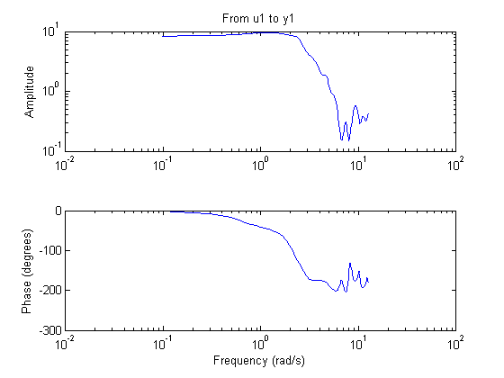
The estimate GS is uncertain, since it is formed from noise corrupted data. The spectral analysis method provides also its own assessment of this uncertainty. To display the uncertainty (say for example 3 standard deviations) we can add additional arguments to the bode function call:
bode(GS,'sd',3,'fill');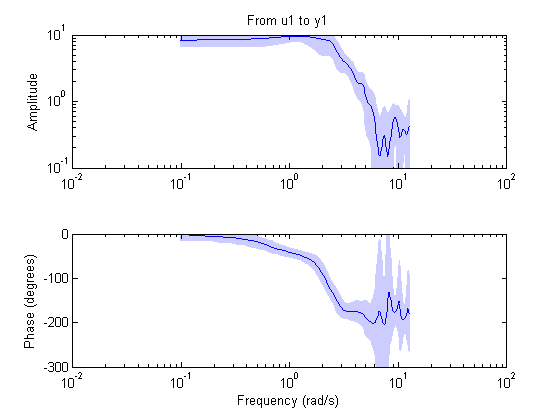
The plot says that although the nominal estimate of the frequency response (blue line) is not necessarily accurate, there is a 99.6% probability (3 standard deviations of the normal distribution) that the true response is within the shaded (light-blue) region.
Estimating Parametric State Space Models
Next let us estimate a default (without us specifying a particular model structure) linear model. It will be computed as a state-space model using a prediction error method. We use the PEM function in this case:
m = pem(ze) % The order of the model will be chosen automatically
State-space model: x(t+Ts) = A x(t) + B u(t) + K e(t)
y(t) = C x(t) + D u(t) + e(t)
A =
x1 x2
x1 0.89144 0.35581
x2 -0.44368 0.62477
B =
u1
x1 -0.034192
x2 -0.043885
C =
x1 x2
y1 -47.339 14.404
D =
u1
y1 0
K =
y1
x1 -0.0080376
x2 0.0099569
x(0) =
x1 0
x2 0
Estimated using PEM using SearchMethod = Auto from data set ze
Loss function 0.89844 and FPE 0.952346
Sampling interval: 0.25
At this point the state-space model matrices do not tell us very much. We could compare the frequency response of the model m with that of the spectral analysis estimate GS:
bode(m,GS)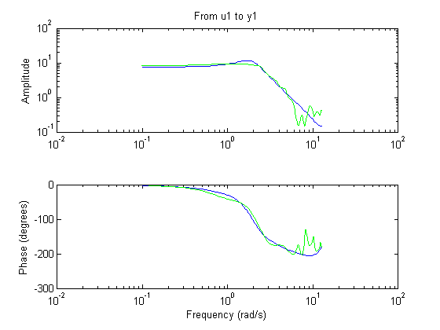
We note that the two frequency responses are in good agreement, despite the fact that they have been estimated in very different ways.
Estimating ARX Models
There is a wide variety of linear model structures, all corresponding to linear difference equations describing the relation between u and y. The different structures all correspond to various ways of modeling the noise influence. The simplest of these models is the ARX-model which is written
A(q)y(t) = B(q)u(t) + e(t),
or in long-hand,
y(t) + a_1 y(t-1) + ... +y_na y(t-na) = b_1 u(t-nk) + ...+ b_nb u(t-nk-nb-1) + e(t)
System Identification Toolbox provides the estimates of ARX models using a Least Squares Estimation technique. An estimate of an ARX model with a prescribed structure - two poles, one zero and a single delay on the input is obtained as ([na nb nk] = [2 2 1]):
mx2 = arx(ze,[2 2 1])
Discrete-time IDPOLY model: A(q)y(t) = B(q)u(t) + e(t)
A(q) = 1 - 1.32 q^-1 + 0.5393 q^-2
B(q) = 0.9817 q^-1 + 0.4049 q^-2
Estimated using ARX on data set ze
Loss function 1.50948 and FPE 1.56986
Sampling interval: 0.25
Comparing the Performance of Two Models
Is this model better or worse than the default state-space model m? One way to find out is to simulate each model (noise free) with the input from the validation data zv and compare the corresponding simulated outputs with the measured output in the set zv:
compare(zv,m,mx2)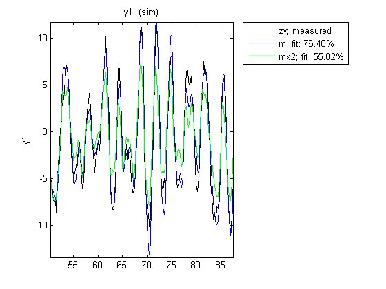
The fit is the percent of the output variation that is explained by the model. Clearly m is the better model.
Using the Output Error (OE) Method to Estimate a Model
Let us consider an output error model y = B/F u to estimate numerator and denominator of the transfer function G. Its parameters are estimated by the OE method. This means that B and F are determined so that the errors e = y - B/Fu are minimized in the mean square sense:
mo2 = oe(ze,[2 2 1])
Discrete-time IDPOLY model: y(t) = [B(q)/F(q)]u(t) + e(t)
B(q) = 0.8383 q^-1 + 0.7199 q^-2
F(q) = 1 - 1.497 q^-1 + 0.7099 q^-2
Estimated using OE on data set ze
Loss function 1.21998 and FPE 1.27003
Sampling interval: 0.25
Has this provided a better estimate? Let us use compare:
compare(zv,m,mx2,mo2)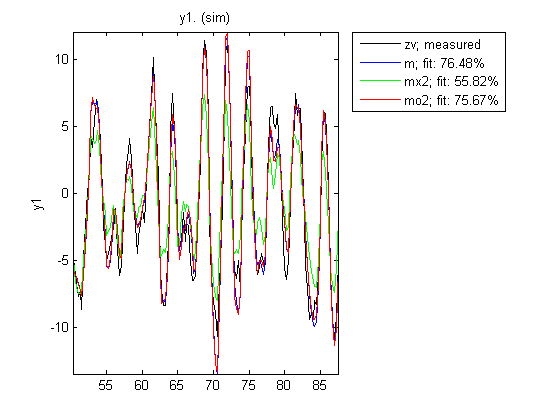
Clearly mo2 is a better model than mx2 of about the same accuracy as m.
Residual Analysis
A further way to gain insight into the quality of a model is to compute the "residuals": i.e. that part e in y = Gu + He that could not be explained by the model. Ideally, these should be uncorrelated with the input and also mutually uncorrelated. The residuals are computed and their correlation properties are displayed by the command RESID. The resid function can be used to evaluate the residues both in the time and frequency domains. First let us obtain the residuals for the output error model in the time domain:
resid(zv,mo2) %plots the result of residual analysis
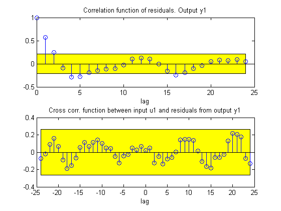 We see that the cross correlation between residuals and input lies in the confidence region (yellow region), indicating that there is no significant correlation. The estimate of the dynamics G should then be considered as adequate. However, the (auto) correlation of e is significant, so e cannot be seen as white noise. This means that the noise model H is not adequate.
An extra argument can be added to the resid function to evaluate the residuals in the frequency domain as shown below:
resid(zv,mo2,'fr'); %plots the result in frequency domain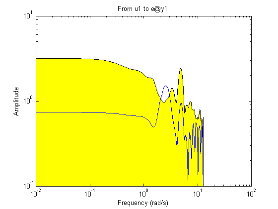
The blue curve is an estimate of the frequency function from u to e. The fact that it lies inside the confidence interval means that the model G is satisfactory at all frequencies.
Estimating ARMAX and Box-Jenkins Models
Let us now compute a second order ARMAX model and a second order Box-Jenkins model. The ARMAX model has the same noise characteristics as the simulated model m0 and the Box-Jenkins model allows a more general noise description.
am2 = armax(ze,[2 2 2 1]) %2nd order ARMAX model
Discrete-time IDPOLY model: A(q)y(t) = B(q)u(t) + C(q)e(t)
A(q) = 1 - 1.517 q^-1 + 0.7152 q^-2
B(q) = 0.9805 q^-1 + 0.5095 q^-2
C(q) = 1 - 0.9806 q^-1 + 0.2207 q^-2
Estimated using ARMAX on data set ze
Loss function 0.930089 and FPE 0.987918
Sampling interval: 0.25
bj2 = bj(ze,[2 2 2 2 1]) %2nd order BOX-JENKINS model
Discrete-time IDPOLY model: y(t) = [B(q)/F(q)]u(t) + [C(q)/D(q)]e(t)
B(q) = 0.9919 q^-1 + 0.4706 q^-2
C(q) = 1 - 0.6293 q^-1 - 0.1204 q^-2
D(q) = 1 - 1.222 q^-1 + 0.3809 q^-2
F(q) = 1 - 1.522 q^-1 + 0.7243 q^-2
Estimated using BJ on data set ze
Loss function 0.904839 and FPE 0.981036
Sampling interval: 0.25
Comparing Estimated Models - Simulation and Prediction Behavior
Now that we have estimated so many different models, let us make some model comparisons. This can be done by comparing the simulated outputs as before:
compare(zv,am2,mo2,bj2,mx2,m)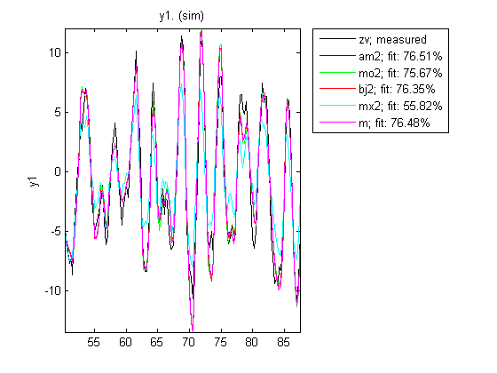
We can also compare how well the models are able to predict the output, say, 1 step ahead:
compare(zv,am2,mo2,bj2,mx2,m,1)

Comparing Frequency Functions
In order to compare the frequency functions for the generated models we use again the bode command:
bode(GS,m,mx2,mo2,am2,bj2);
legend('spa','PEM','arx','oe','armax','bj');
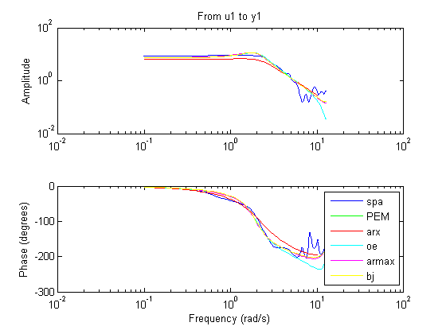 The noise spectra of the estimated models can also be analyzed. For example here we compare the noise spectra the ARMAX and the Box-Jenkins models with the PEM and the Spectral Analysis models. We once again use the Bode function for this purpose:
bode(GS('noise'),m('n'),mx2('n'),am2('n'),bj2('n')) legend('spa','PEM','arx','armax','bj');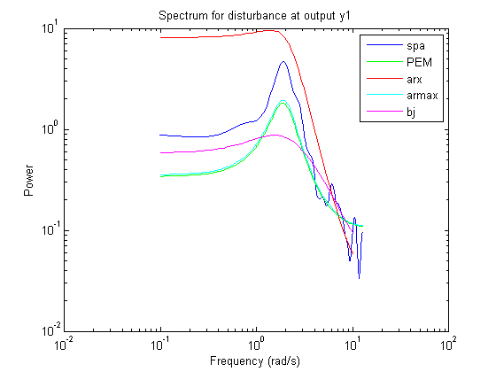
Comparing Estimated Models with the True System
Here we validate the estimated models against the true system m0 that we used to simulate the input and output data. Let us compare the frequency functions of the ARMAX model with the true system.
bode(m0,am2)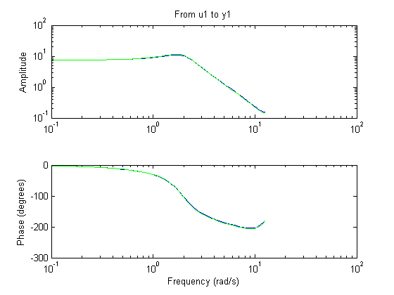
The responses practically coincide. The noise spectra can also be compared.
bode(m0('noise'),am2('noise'))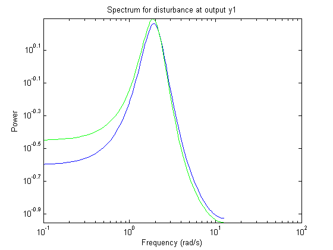
Let us also examine the pole-zero plot
zpplot(m0,am2)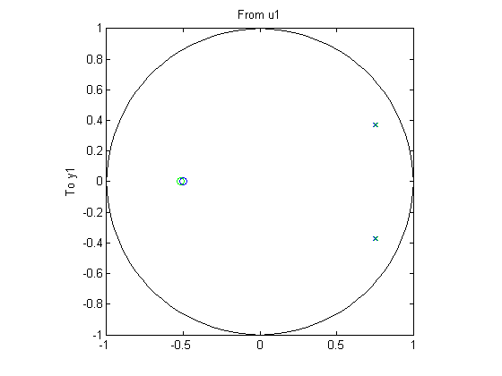
It can be seen that the poles and the zeros of the true system (blue) and the ARMAX model (green) are very close.
We can also evaluate the uncertainty of the zeros and poles. To plot confidence regions around the estimated poles and zeros corresponding to 3 standard deviations, use:
zpplot(m0,am2,'sd',3) %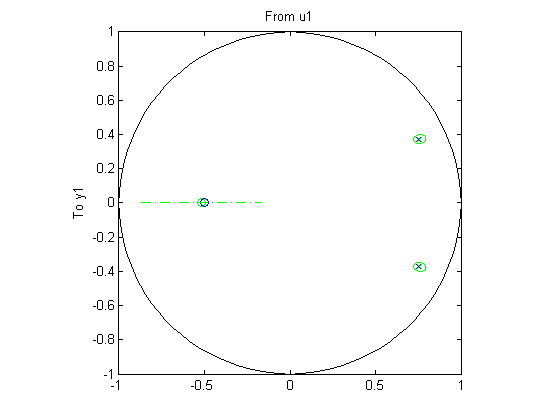
We see that the true, blue zeros and poles are well inside the green uncertainty regions.
Additional Information
For more information on the different estimation techniques that are available with System Identification Toolbox™ visit the System Identification Toolbox product information page.